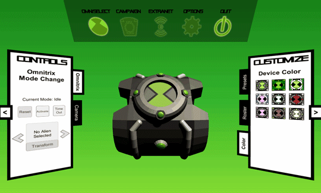
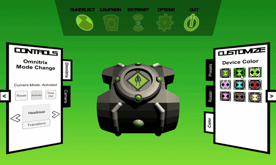

Prototype V0.3.1 Video (12/19/2016)
Minor update to Version 0.3.0 includes:Prototype V0.3.0 Preview (12/09/2016)

Animated title screen based on the Alien Force title sequence
Scrolling texture animation for selecting aliens on the Omnitrix faceplate
Many different color scheme choices to choose from
Upcoming Features
Features for Prototype 0.0.0 include:
- Placeholder Omnitrix model representing the original series
- Placeholder alien models of Four Arms and XLR8 from the Nintendo DS game
- Initial prefabs for collapsible menu panels, menu buttons, devices, and aliens
- Initial scenes for Title Menu, Device Selection, Device Simulation, and Alien Transformation
- Alien info menu panel that loads data about each alien from a CSV file
- Action menu panel for controlling the various states of an Omnitrix.
- Keyboard controls for changing device state and navigating menus.
The full list of upcoming features can be found in the living Update Log document (link tbd).
Authors and Contributors
The OmniSim project was conceived and is designed by ThatOmnitrixGuy, with additional contributions from SuperSketch1220. The initial prototype Unity projects are developed by Warped2713.
Support
Having trouble running OmniSim? Let us know by adding a new issue to our issue-tracking page.